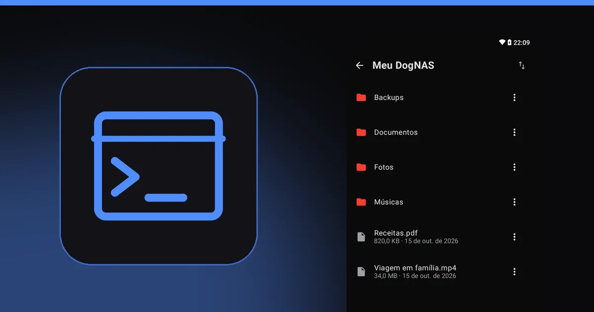

Como acessar o DogNAS pelo FileZilla, WinSCP, Cyberduck e rclone

O DogNAS fala SFTP, então qualquer programa que entenda esse protocolo consegue acessar os arquivos do seu servidor. Este guia mostra como conectar quatro dos mais usados e ajuda a escolher. Se você ainda não sabe o que é SFTP, comece por o que é SFTP.
Antes de tudo: os dados de conexão
Em qualquer programa, você vai precisar do mesmo conjunto de informações: endereço do servidor (host), porta, usuário e senha. O servidor DogNAS mostra esses dados na tela "Como conectar seu PC ou iPhone". O computador precisa estar na mesma rede Wi-Fi do servidor, e o servidor precisa estar ligado.
Na primeira conexão, o programa mostra a impressão digital (fingerprint) da chave do servidor e pede para você confiar nela. Aceite quando o aparelho for o seu. Se ela mudar depois sem motivo, desconfie.
FileZilla (Windows, Mac e Linux)
É o mais conhecido e funciona nos três sistemas.
- Abra o Gerenciador de Sites e crie um novo site.
- Em Protocolo, escolha SFTP.
- Preencha host, porta, usuário e senha com os dados do servidor.
- Conecte e arraste os arquivos entre o lado do computador e o lado do servidor.
WinSCP (Windows)
Tem uma interface parecida com a do Explorador de Arquivos e é bom para quem usa só Windows.
- Na tela de login, escolha SFTP como protocolo de arquivo.
- Preencha nome do host, porta, usuário e senha.
- Salve a sessão e conecte.
Cyberduck (Windows e Mac)
Simples e visual, popular entre quem usa Mac.
- Clique em Abrir conexão e escolha SFTP na lista.
- Preencha servidor, porta, usuário e senha.
- Conecte e navegue pelas pastas como em um navegador de arquivos.
rclone (linha de comando)
Para quem gosta de automação e scripts.
- Rode
rclone config, crie um novo remoto e escolha o tipo sftp. - Informe host, porta, usuário e senha.
- Use comandos como
rclone lserclone copypara listar e copiar arquivos entre o computador e o servidor.
Qual escolher
- Quer o mais simples no Mac: Cyberduck.
- Usa Windows e quer algo parecido com o Explorador: WinSCP.
- Usa mais de um sistema: FileZilla.
- Quer automatizar cópias: rclone.


Cuidados
- Senha e PIN. Não compartilhe os dados de conexão. Você pode revogar a credencial de um aparelho quando quiser.
- Não é backup. Copiar para o servidor guarda os arquivos em outro lugar, mas o DogNAS não faz backup sozinho. Mantenha uma cópia independente do que é importante.
- No celular, use o DogNAS Client Lite, com QR Code e PIN, em vez de um cliente SFTP genérico.
Para montar o servidor, veja como transformar um Android antigo em servidor de arquivos.